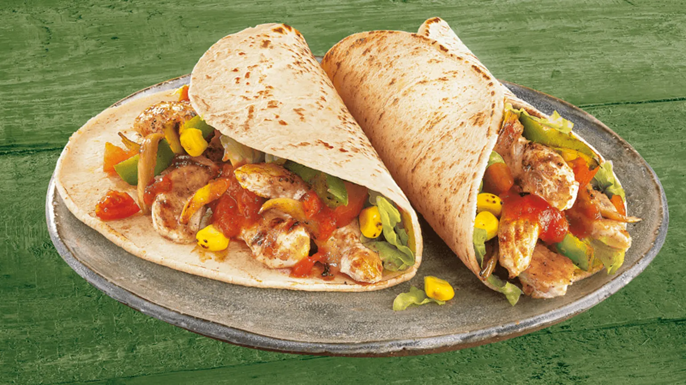

Fajita

Ingredients
- 3/4 lb top sirloin steak
- 2 tabelspoons olive oil
- 1 tablespoon lime juice
- 1 garlic clove, finely minced
- 1/2 teaspoon chili powder
- 1/2 teaspoon cumin
- 1/2 teaspoon hot pepper flakes
- 1/2 teaspoon black pepper
- 1/2 teaspoon salt
- 8 flour tortillas (8 inch/20cm)
- 1-2 onion
- 2 small sweet peppers (green, red, yellow)
Preparations
- Slice steak into thin strips
- in bowl, mix together 1 tablespoon olive oil, lime juice, garlic, chili powder, cumin, hot pepper flakes, black pepper & salt
- Add beef strips and stir to coat, set aside.
- Wrap tortillas in foil and place in 350° oven for 5-10 minutes or until heated through.
- Cut onions in half lengthwise and slice into strips, cut your peppers into strips.
- In large non stick skillet over medium high heat, heat remaining tablespoons of olive oil.
- Add onions & peppers stirring for 3-4 minutes, until softened; transfer to a bowl and set aside.
- Add beef to skillet, cook, stirring for 3-4 minutes or until they lose their red color.
- Return onions and peppers to skillet; stir for about one minute.
- To serve, spoon a portion of the beef mixture down the centre of each tortilla, top with your desired toppings , fold bottom of tortilla up over filling, fold the sides in, overlapping.